Explain construction
Show how societies attach meaning to race, ethnicity, gender, sexuality, age, and class.
Eleanor’s descendants inherit a family story, but they do not inherit the same social location, opportunities, treatment, or power.
Show how societies attach meaning to race, ethnicity, gender, sexuality, age, and class.
Compare systems that rank groups and distribute wealth, power, prestige, and life chances.
Separate stereotypes, prejudice, discrimination, racism, sexism, classism, ageism, and institutional discrimination.
Use intersectionality and power analysis to explain how resources, networks, institutions, and agendas shape outcomes.
Grace, Eleanor’s granddaughter, looks around the room and sees a century of social change. Her grandmother once needed social permission to wear trousers, vote, control property, or pursue many occupations. Grace’s grandchildren carry laptops and discuss college, healthcare, jobs, debt, and discrimination. Their choices matter, but choices begin from different starting points.
Social identity names the parts of self connected to group membership and social classification. Social location describes where a person stands within intersecting systems such as class, race, gender, age, sexuality, nationality, religion, and ability. Neither idea reduces a person to labels. Both help explain patterned experiences that biography alone cannot.
Social construction occurs when people collectively create, repeat, and institutionalize meanings. A constructed category is not imaginary. Money, citizenship, race, gender expectations, age boundaries, and prestige have real consequences because people and institutions act on shared definitions.
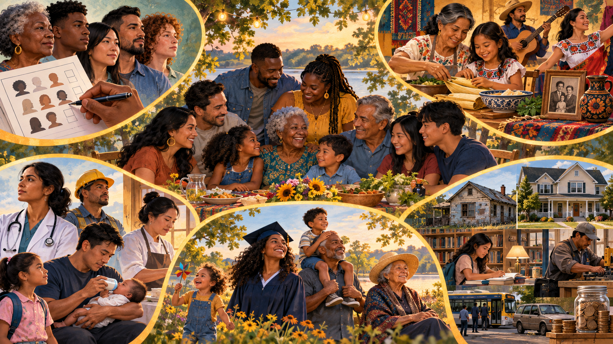
A socially constructed classification that attaches meaning to perceived physical traits such as skin color, hair texture, or facial features.
Family example: strangers may racialize two relatives differently even when both describe the same ancestry.
A shared cultural heritage involving ancestry, history, nationality, language, religion, foodways, or traditions.
Family example: recipes, stories, music, and holiday practices connect descendants who may not be placed in the same racial category.
Social identities, meanings, roles, expression, and institutional expectations associated with sex categories.
Family example: Eleanor and Grace encounter different expectations about voting, work, clothing, leadership, and care.
A biological passage of time organized into socially defined stages, rights, duties, expectations, and judgments of competence.
Family example: the meaning of childhood, retirement, and “acting your age” changes across generations.
A social and economic position shaped by income, wealth, occupation, education, networks, and access to resources.
Family example: two equally motivated cousins may face different choices when only one has savings, transportation, or professional contacts.
Select an example to reveal the social construction.
Many human traits vary gradually and overlap across populations.
A society emphasizes a small number of visible traits while ignoring many others.
Census labels, legal definitions, and everyday identities change across time and place.
Institutions can turn classifications into differences in treatment, opportunity, and power.
Race sorts people through meanings attached to perceived physical traits. Ethnicity organizes belonging around shared culture, ancestry, history, language, religion, or national origin. They can overlap, but they are not synonyms: people placed in the same racial category may have very different ethnic histories, and people who share an ethnicity may identify with more than one race.
A racial-ethnic group is a population whose shared identity and treatment involve both racialization and cultural heritage. The hyphen reminds us to ask two questions: how does the group understand its own history and culture, and how do outsiders or institutions classify it? For example, U.S. federal categories have historically treated Hispanic or Latino origin as applicable to people of any race; the 2024 federal standards began moving toward one combined race-and-ethnicity question with multiple selections. The categories are tools created for public purposes—not natural boxes or complete descriptions of a person.
A minoritized group has less institutional power or unequal treatment, regardless of numerical size. A dominant group holds greater control over institutions and valued resources. “Minoritized” emphasizes a social process rather than suggesting that inequality comes from group size.
An oversimplified belief applied to a category of people.
An attitude or judgment formed before adequate evidence.
Unequal action or treatment based on actual or perceived group membership.
Racial prejudice or discrimination connected to practices, institutions, and social power.
Prejudice, discrimination, or unequal arrangements based on sex or gender.
Judging or treating people unequally because of actual or perceived social class.
Using one’s own culture as the standard for judging other cultures, often treating difference as inferiority.
Stereotyping, prejudice, or discrimination based on age or presumed life stage.
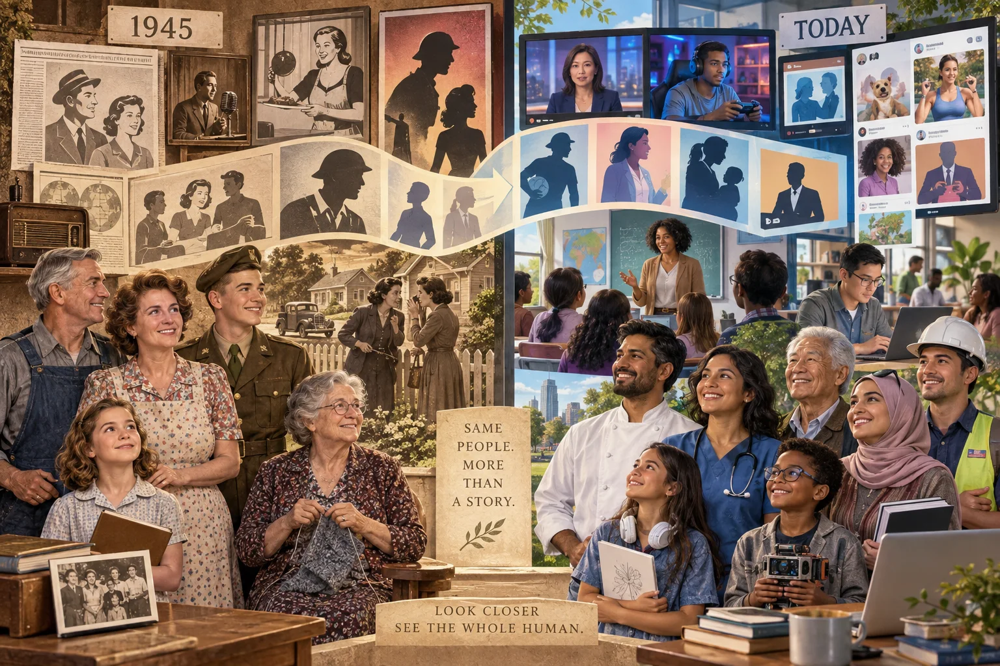
The sequence is possible, but it is not automatic. Someone may hold a stereotype and deliberately refuse to act on it. A person may discriminate without admitting prejudice. An organization may produce unequal results through a routine developed for another purpose. Sociology asks about attitudes, actions, rules, and outcomes separately before explaining how they connect.
Prejudice concerns judgments; discrimination concerns unequal treatment. To understand how they become durable social patterns, sociology also asks which groups can define the rules, distribute resources, and make their preferences appear normal. Dominant group and minority group describe unequal positions in a social relationship, not levels of human worth.
A social category with disproportionate access to institutional power, valued resources, and the authority to define society’s standards. Its ways of speaking, working, dressing, or forming families may be treated as the default.
Ask: Who sets eligibility rules, controls appointments, owns influential media, and decides whose experience counts as normal?
A social category whose members face patterned disadvantage or unequal treatment linked to a socially marked characteristic. “Minority” refers here to a subordinate position in a power relationship; the group may be numerically large.
Ask: Whose access, representation, safety, or credibility is restricted, and what institutional practices reproduce that restriction?
Dominant groups may explain their advantages as merit, tradition, or natural superiority; sociology tests those explanations against history, institutional rules, and unequal opportunity. Group membership does not mean every advantaged person consciously discriminates or has an easy life. Members of subordinated groups also organize, resist, and hold power in particular settings. Intersectionality helps explain how advantage in one dimension can coexist with disadvantage in another (Wirth, 1941; see also the chapter’s discussion of intersectionality).
A fictional company’s workforce is 70% women, but its executive team is 90% men. Women are routinely excluded from leadership training.
Analyze: Women are the numerical majority of employees. Their exclusion suggests a subordinate position in this organization’s leadership structure. The training rule is a mechanism of institutional discrimination; the head count alone would miss it. Investigate job categories, selection criteria, decision makers, and outcomes before generalizing beyond this case.
Merton separated a person’s attitude from the person’s action. His original labels reflect the language of the 1940s and can sound dated today, but the two-by-two model remains useful because it shows that private belief and public behavior do not always match. Social pressure, law, profit, professional rules, and courage can change what people do.
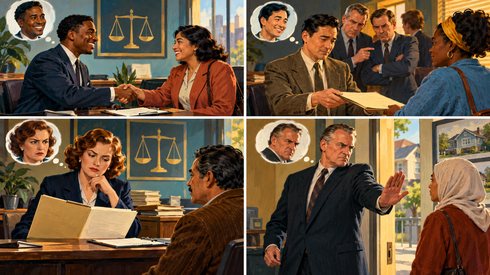
| Attitude and action | Merton’s historical label | Applied example |
|---|---|---|
| Low prejudice · Does not discriminate | All-weather liberalBelief and fair action agree, even when fairness carries a cost. | A supervisor values equality and uses the same job criteria despite pressure to favor an in-group applicant. |
| Low prejudice · Discriminates | Fair-weather liberalA person gives in when conformity, convenience, or profit rewards unequal action. | A landlord personally rejects racism but follows a discriminatory request because a powerful client threatens to leave. |
| High prejudice · Does not discriminate | Timid bigotBias remains, but law, policy, self-interest, or social norms restrain unequal behavior. | A manager holds a biased view but follows a transparent hiring rubric and makes the fair decision. |
| High prejudice · Discriminates | Active bigotBiased attitude and unequal action reinforce one another. | A housing provider expresses hostility and rejects an otherwise qualified family because of group membership. |
Institutional discrimination occurs when rules, routines, or established practices produce unequal treatment or outcomes. Individual intent may be absent. Housing appraisal, school funding, hiring networks, lending rules, transportation, healthcare access, and criminal justice can accumulate advantages or barriers across a lifetime.
| Level | Example | Sociological question |
|---|---|---|
| Interpersonal | A landlord rejects a qualified applicant because of race. | What attitude and action occurred? |
| Institutional | A lending or funding rule repeatedly disadvantages particular communities. | How does the routine distribute opportunity? |
| Structural | Housing, schools, transportation, work, healthcare, and wealth reinforce one another across generations. | How do several institutions create a durable pattern? |
At a summer camp, researchers separated boys into groups that developed names, norms, leaders, and solidarity. Competitive games with scarce prizes strengthened an in-group and a negatively stereotyped out-group. Simply placing the groups near one another did not reliably remove hostility. Cooperation improved when the boys faced superordinate goals—important problems neither group could solve alone.
Similarity, interaction, symbols, and shared success create a sense of “we.”
When rewards are structured as one group’s gain and another’s loss, boundaries can harden.
Members exaggerate differences and interpret the same act more favorably when their own group performs it.
Equal-status cooperation toward a necessary shared outcome can revise expectations and relationships.
Merton described moral alchemy as the social process of praising a behavior when an in-group member performs it but condemning the same behavior when an out-group member does. The behavior has not changed; the evaluator has changed the moral label. This double standard protects the in-group’s status and makes prejudice feel like neutral judgment.
Sociologist Donna Gaines wrote Teenage Wasteland: Suburbia’s Dead End Kids after four teenagers in Bergenfield, New Jersey, died by suicide in 1987. Rather than accepting news portrayals that reduced marginalized young people to drugs, heavy-metal music, or personal failure, Gaines listened to the teenagers’ own accounts and studied the suburban institutions around them. Her analysis connected private pain to public issues: class position, school status, blocked futures, adult labeling, work, family strain, and the media’s search for a simple villain.
Schools may reward athletics, visible achievement, conventional appearance, and pathways that adults recognize as promising. The label can supply networks and the benefit of the doubt.
Working-class rock-and-roll youth could be treated as trouble before an individual act occurred. Music, clothing, cars, smoking, or gathering places became status markers that outsiders read as moral defects.
Which institutions distribute belonging, attention, safety, discipline, and believable futures—and whose explanation of youth receives authority?
The contrast should not turn either group into a stereotype. Not every athlete held high status or every “burnout” shared the same class background, behavior, or future. The important pattern is status generalization: once a group receives prestige or stigma, observers may reinterpret the same friendship, confidence, risk, or rule-breaking as a virtue for one group and a vice for the other. That is Merton’s moral alchemy operating inside a classed youth culture.
People may develop familiarity and comfort with groups that share language, routines, class position, neighborhood, religion, or everyday culture. Society frequently sorts those experiences along racial lines through housing, schooling, wealth, and networks, making race appear to be the cause when social distance and unequal arrangements are doing much of the work. Cross-racial socialization, equal status, sustained cooperation, common goals, and institutional support can weaken those learned boundaries. Evidence about possible early or automatic in-group preferences should therefore never be used to treat racism as natural, fixed, or excusable.
Imagine two student groups competing for one campus resource. First identify the rule that creates zero-sum competition. Then redesign the situation so members have equal status, repeated contact, a genuinely shared goal, interdependent roles, and support from legitimate authorities. Explain how each condition could interrupt stereotypes rather than merely asking people to “get along.”
Eleanor-family caption: Grace’s relatives may share a family name while receiving different treatment because strangers and institutions classify them differently. The family story makes the distinction visible: identity is personal and relational, while stratification distributes consequences.
In the typical XX/XY pathway, an egg contributes an X chromosome and a fertilizing sperm contributes either X or Y. The sperm’s chromosome therefore establishes the embryo’s usual XX or XY chromosomal pattern. This does not determine a person’s future gender identity, personality, social role, interests, ability, or worth.
Chromosomes, genes, hormones, gonads, reproductive anatomy, and secondary physical traits.
A person’s internal understanding of gender; it cannot be read directly from chromosomes or clothing.
How people communicate gender through appearance, language, behavior, and other social signs.
Social expectations about behavior, labor, relationships, and power assigned to gender categories.
A pattern of emotional, romantic, or sexual attraction and identity; it is distinct from gender identity.
Most human body cells contain 46 chromosomes arranged in 23 pairs—not 23 chromosomes total. A trisomy means three copies of a chromosome; a monosomy means one copy instead of the usual pair.
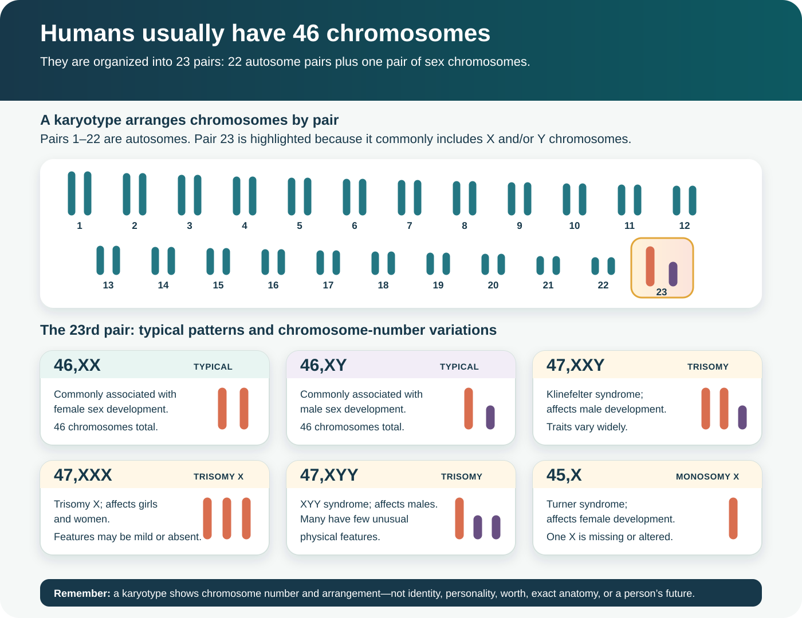
Klinefelter syndrome affects male development; features vary and may be mild.
Trisomy X affects girls and women; developmental, learning, or health effects vary.
XYY syndrome affects males; many have few unusual physical features.
Turner syndrome affects female development and is a monosomy rather than a trisomy.
Anne Fausto-Sterling’s “five sexes” argument: her provocative 1993 essay challenged the assumption that every body fits neatly into two biological boxes. Its sociological value lies in asking who creates categories, whose body becomes the standard, and what institutions do when bodies do not fit. It is not a current clinical classification, and its historical labels should not be used to name people.
It can show chromosome number and arrangement in the cells examined. It cannot reveal a person’s gender identity, personality, worth, exact anatomy, abilities, or future. It also does not show every hormone, receptor, gene, or mosaic pattern.
The case challenged a strong version of the claim that gender identity could be produced almost entirely through socialization. It also warns against medical authority without accountability, secrecy, irreversible intervention, and research conducted without meaningful consent or respect for a child’s developing agency.
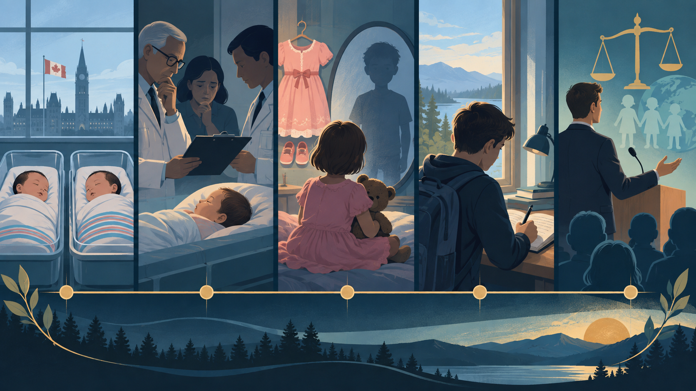
The case was called “John/Joan” because early professional reports used pseudonyms. Those reports were widely cited as evidence that gender identity was highly malleable, but David’s later testimony and long-term follow-up showed that the published success narrative omitted or misread crucial evidence of resistance and distress.
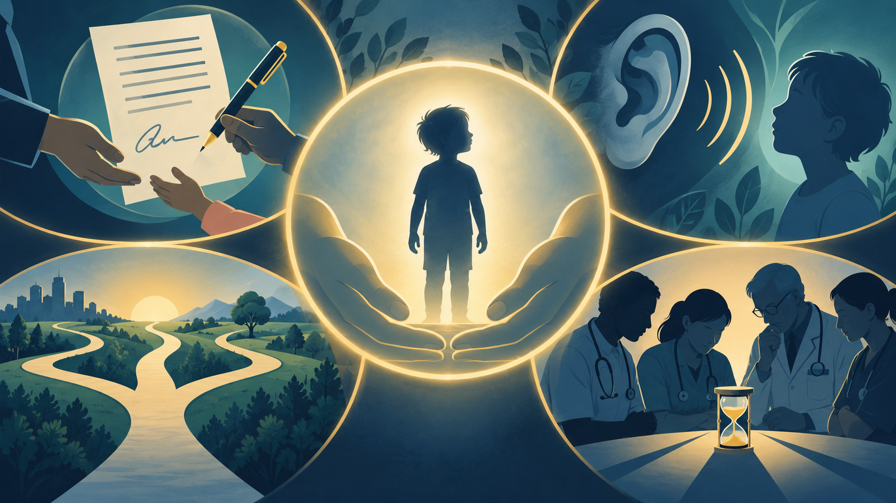
| Overstated claim | More careful conclusion |
|---|---|
| “Gender is entirely biological.” | No single case can establish how biology, development, relationships, culture, and self-understanding interact for everyone. |
| “Socialization does not matter.” | Socialization shapes roles, expression, opportunity, language, and treatment. The case challenges the claim that socialization can manufacture any identity professionals choose. |
| “David’s experience is the same as being transgender or intersex.” | No. David was reassigned after an injury. His experience should not invalidate transgender identities or collapse differences of sex development into one story. |
| “His suicide had one proven cause.” | David died by suicide in 2004 after multiple documented stresses. Suicide should not be reduced to one cause or used as proof of one theory. |
Institutions: family, medicine, research, education, media, and gender norms all shaped David’s experience. Power: professionals controlled specialized knowledge, treatment, and the published account while the child had the least institutional power. Child-centered alternative: provide honest, age-appropriate information; listen to persistent distress; seek assent; avoid unnecessary irreversible procedures; offer independent counseling; preserve options; and revise plans as the child’s own identity becomes clearer.
Gender socialization teaches expectations through family, peers, schools, religion, media, and work. Social learning emphasizes modeling and reinforcement. Cognitive theories emphasize how children organize categories. Interactionists examine repeated performances and reactions. Conflict and feminist theories examine who gains labor, authority, safety, income, or political power from gender arrangements.
Gender stratification is the unequal distribution of income, authority, unpaid work, safety, political representation, and opportunity by gender. Occupational segregation channels people toward different work. The glass ceiling restricts advancement into top positions; the glass escalator describes advantages some men receive in women-dominated occupations. The second shift names unpaid household and caregiving labor performed after paid work.
In The Devil in the Shape of a Woman, historian Carol F. Karlsen examined witchcraft accusations in colonial New England and found a recurring relationship among gender, inheritance, age, and economic position. Women rarely inherited substantial property under a system designed to pass land from men to male heirs. Women who had inherited—or stood to inherit—property without brothers or sons could interrupt that expected transfer. Widows and women beyond the socially approved roles of dependent daughter, wife, or mother could therefore become unusually visible and vulnerable.
Conflict-theory connection: defining an economically independent woman as morally dangerous could help restore property, obedience, and authority to a patriarchal order. Interactionist connection: ordinary actions—speaking forcefully, requesting repayment, living without a husband, keeping animals, practicing healing, or quarreling with neighbors—could be reinterpreted through the stigmatizing label “witch.” Life-course connection: older and middle-aged women could face both sexism and ageism when they no longer fit ideals of youth, fertility, dependence, or quiet service.
The “wave” metaphor helps organize periods of concentrated activism, but it can hide work that continued between waves and movements led by Black, Indigenous, working-class, immigrant, lesbian, and other women whose histories do not fit neatly into three chapters. Feminism broadly seeks to understand and challenge gender inequality; feminists disagree about its causes, priorities, and solutions.
Common starting marker: the 1848 Seneca Falls Convention, although women organized for rights before it.
Central goals: legal personhood, education, property and contract rights, and especially suffrage.
Major accomplishment: the Nineteenth Amendment prohibited denying the vote on the basis of sex in 1920. Poll taxes, literacy tests, citizenship restrictions, intimidation, and racial violence still prevented many women—especially Black, Native, Asian American, and Latina women—from exercising equal voting rights.
Catalysts: civil-rights organizing, women’s labor activism, the 1963 publication of The Feminine Mystique, and consciousness-raising groups helped turn private experience into a public issue.
Central goals: employment and pay, education, reproductive autonomy, childcare, political representation, family law, sexual violence, and the unequal second shift.
Major accomplishments: Title VII protections against sex discrimination, Title IX educational protections, expanded credit and employment opportunity, and greater legal recognition of sexual harassment and domestic violence. Gains remained unequal and contested.
Frequently cited catalyst: Anita Hill’s 1991 testimony during Clarence Thomas’s confirmation hearings galvanized young activists. Rebecca Walker’s 1992 essay “Becoming the Third Wave” gave the generation a widely used name.
Central goals: intersectionality, representation, sexual agency, gender expression, popular culture, and recognition that race, class, sexuality, nationality, and gender cannot be separated.
Major contributions: broadened whose experience counted as feminist knowledge, challenged one universal model of womanhood, built zine and youth cultures, and helped carry organizing into early digital networks. It produced cultural and organizational change more than one defining law.
Seeks equal rights and access through law, education, employment, representation, and reform of existing institutions.
May defend women’s dignity and civic influence while valuing motherhood, family, religion, or sex-differentiated roles more strongly than other feminisms.
Locates inequality in deeply rooted patriarchal control of bodies, sexuality, violence, family, and culture and seeks structural transformation rather than limited reform.
Connects gender inequality with capitalism, paid labor, unpaid care, ownership, and class power.
Show how racism, gender, class, sexuality, and other institutions operate together; no group’s experience can stand for all women.
Choose one proposal—pay transparency, publicly supported childcare, stronger violence-prevention law, equal representation, recognition of unpaid care, or women-only organizing space. Identify which feminist current would most strongly support it, which might criticize it, and whether the proposal reduces hierarchy or merely changes who occupies the highest position.
Advertising sells products while also circulating messages about who should lead, serve, earn, care, desire, and be admired. Repeated portrayals can make unequal roles seem ordinary: men as decision makers and experts; women as domestic helpers or decorative bodies. Ads can also reward men for emotional toughness and punish departures from a narrow masculinity. These are cultural scripts, not natural descriptions of what women or men can do.

Who stands above whom? Who explains the product, controls money, or receives credit? A visual hierarchy can present gender inequality as common sense.
Objectification reduces a person to a body, body part, decoration, or tool for someone else’s use, obscuring agency, voice, and full personhood.
Repeated ideals privilege selected bodies, ages, skin tones, and abilities. Ask who is absent and how a product is offered as the solution to an insecurity the ad reinforces.
Some historical campaigns make control, humiliation, or threats into a joke. Critically reading the image means examining the relationship it asks an audience to accept.
Content note: these historical ads include sexism, objectification, and imagery trivializing violence against women. They appear as objects of criticism. The written analysis below provides an alternative to viewing the collage.

The collection pairs domestic service with male entitlement, ridicules women’s competence, and treats women’s bodies as products or possessions. Other examples portray aggression as humorous. Analyze the implied relationship and intended consumer rather than repeating the ads’ degrading slogans. These selected ads demonstrate patterns within this collection; they do not establish how common a pattern was across all advertising.

Media educator Jean Kilbourne helped bring the critical analysis of gender representation in advertising into classrooms. Her original Killing Us Softly: Advertising’s Image of Women appeared in 1979; later versions revisited the issue with newer campaigns. Her work asks viewers to examine recurring images across many ads rather than treating each ad as an isolated joke (Kilbourne, n.d.).
Across the series, Kilbourne critiques objectification and restrictive ideals. In the fourth film, that critique connects distorted ideals of femininity with questions about health and gender violence. These are arguments for examining the surrounding media culture—not proof that one ad determines one viewer’s actions. Audience interpretation, family, peers, institutions, and historical context also matter (Hodgson, n.d.).
Instructor-provided upload of the 1979 film. Availability and caption quality depend on the uploader. Open the video on YouTube · Kilbourne’s film information. If the video is unavailable or inaccessible, use the written explanation and image descriptions here to complete the same analysis.
Three lenses: symbolic interactionism examines meanings and gender performances; conflict and feminist theories examine ownership, power, and profit; functionalism asks what roles the message reinforces and what dysfunctions those roles may produce.
Then and now: compare a historical print ad with a contemporary sponsored post. Ask whether gender scripts have changed, become more diverse, or been repackaged. A useful comparison requires examples and context, not the assumption that all past ads were alike or every new ad is equitable.
Gerontology is the study of aging and later life. Aging includes biological change, but societies construct life stages, retirement, beauty, competence, dependence, authority, and the “proper” timetable for education, work, marriage, caregiving, and retirement. Labels such as young-old (often 65–74), old-old (75–84), and oldest-old (85+) are descriptive conventions—not diagnoses.
Graying of America describes the rising share and number of older adults. It results from longer lives, the large baby-boom cohort moving into later life, and lower fertility. An older population is not simply a “burden.” Older adults provide paid labor, taxes, caregiving, volunteering, knowledge, consumption, leadership, and intergenerational support. The sociological question is whether institutions adapt quickly enough—and whether the costs and benefits are shared fairly.
An age cohort is a group born during the same period that encounters major events and technologies at similar life stages. Named generations are broad social constructions, not personality types. Boundaries vary by source, people within every cohort differ, and race, class, gender, geography, immigration, disability, and family history may matter more than a generation label.
Approximately 1928–1945. Childhood or youth overlapped the Great Depression, World War II, rationing, radio, and strong institutional conformity. In later life, members experienced rapid changes in civil rights, gender roles, medicine, and communication.
1946–1964. A large postwar birth cohort came of age amid suburban growth, television, expanding higher education, civil rights struggles, Vietnam, feminism, and counterculture. Its size continues to influence retirement, healthcare, housing, and Social Security.
1965–1980. This smaller cohort encountered deindustrialization, rising divorce, “latchkey” childhoods, cable television, cassette culture, personal computers, and changing expectations for women’s paid employment.
1981–1996. Millennials grew alongside home internet and globalization and entered adulthood around 9/11, the Great Recession, expanding student debt, smartphones, and delayed access to housing and stable careers.
Approximately 1997–2012. Smartphones, social media, school-security concerns, climate anxiety, political polarization, and COVID-era disruption shaped formative years. Constant connection can expand community while increasing surveillance and comparison.
Beginning around 2013. This still-developing cohort is growing up with tablets, streaming, smart homes, algorithmic media, AI-assisted learning, and adults debating screen time, privacy, and the skills children will need.
Well-being is supported when people sustain or replace valued roles, relationships, movement, learning, and purpose. The relationship is bidirectional: health can affect participation, while isolation and inaccessible environments can affect health.
Meaning for society: build transportation, accessible recreation, flexible work, lifelong learning, volunteering, and social spaces. Activity should be chosen and supported—not compulsory busyness or denial of disability.
Cumming and Henry proposed that older adults and society gradually withdraw from one another, allowing role transfer. Retirement may open positions and shift responsibility.
Meaning for society: planned transitions can preserve knowledge and choice, but the theory can disguise forced retirement, isolation, or age discrimination as “natural.” Always ask who chose the withdrawal and who benefits.
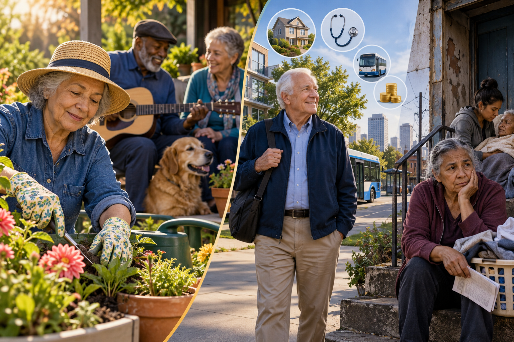
People adapt by preserving identities, values, skills, relationships, places, and routines. A runner may become a walker; a gardener may use raised beds; a musician may join an accessible ensemble.
Meaning for society: universal design, assistive technology, home modification, flexible transportation, and stable communities help people adapt the method while preserving the self.
Relationships exchange money, time, care, housing, transportation, knowledge, affection, status, and decision support. Reciprocity may unfold over decades rather than through equal immediate trades.
Meaning for society: recognize unpaid care and knowledge, protect choice, and prevent dependence from becoming control. Market price is not the same as social value.
Later life reflects cohort history, transition timing, linked lives, agency, and accumulated advantage or disadvantage. Retirement at 62 does not mean the same thing after hazardous work, unpaid caregiving, inherited wealth, or discrimination.
Meaning for society: prevention begins long before old age. Education, safe work, wages, caregiving policy, housing, and healthcare shape later-life security.
Visual connection: use the linked-lives illustration immediately above to trace how one transition travels through the family.
Class, race, gender, disability, work history, and political power distribute pensions, healthcare, safe housing, transportation, time, and longevity unequally.
Meaning for society: decisions about Social Security, Medicare, Medicaid, housing, leave, and long-term care decide whether risk is shared publicly or absorbed privately by families.
Visual connection: compare the resource inequalities shown in the continuity illustration with the institutional decisions discussed here.
At 72, Elena retires, moves near her daughter, continues singing in a choir, helps with grandchildren, and receives transportation help. Choose a lens.
Social Security is federal social insurance. Old-Age, Survivors, and Disability Insurance—OASDI—is financed mainly through payroll taxes and operates largely on a pay-as-you-go basis: taxes collected from current workers primarily fund current beneficiaries, while trust-fund reserves are also part of financing. It is not a personal savings account, and retirement is not its only function.
Ageism is the use of age-based stereotypes (how we think), prejudice (how we feel), and discrimination (how we act) toward others or ourselves. It may target younger people as irresponsible or older people as incapable, frail, technologically incompetent, or resistant to change. Institutional ageism occurs when rules and designs repeatedly disadvantage an age group; internalized ageism occurs when people apply society’s limiting beliefs to themselves.
Ageism can reduce hiring, training, promotion, medical attention, autonomy, housing options, social participation, and willingness to seek help. It also wastes skill and weakens solidarity by treating generations as competitors rather than linked contributors.
Social stratification describes durable layers of unequal access to property, power, prestige, and valued opportunity. Life chances, a term associated with Weber, are the probabilities of accessing education, health, housing, safety, work, and other desired outcomes.
Core rule: people are treated as property and denied control over labor, movement, family, and legal personhood. Historical enslavement could follow conquest, debt, punishment, birth, or racial classification.
Past use: states and owners extracted agricultural, domestic, reproductive, sexual, military, and skilled labor. In U.S. chattel slavery, status became racialized, permanent, and hereditary.
Present continuation: legal ownership is abolished, but forced labor, debt bondage, forced marriage, prison labor controversies, and trafficking can reproduce coercive control.
Living effects: stolen labor and blocked property ownership shaped wealth, institutions, racial ideology, family disruption, and unequal starting points that outlast abolition.
Core rule: rank is ascribed at birth, boundaries are maintained through endogamy, occupation, social separation, and ideas of purity or inherited worth.
Past use: caste systems stabilized specialized labor and authority by making hierarchy religiously, culturally, and socially meaningful.
Present continuation: India constitutionally abolished “untouchability,” yet caste discrimination can persist in marriage, housing, work, education, politics, and diaspora communities. Caste-like racial boundaries have also been used as an analytical comparison elsewhere.
Living effects: inherited networks and stigma can shape opportunity even when formal law promises equality.
Core rule: legally distinct estates—such as nobility, clergy, and commoners—receive unequal rights and obligations tied to land, birth, and political order.
Past use: feudal rulers exchanged land, protection, labor, taxes, and military service through inherited relationships. Women generally occupied the legal estate of fathers or husbands.
Present continuation: formal estates have weakened, but inherited titles, land concentration, monarchy, legacy admission, family political networks, and intergenerational property can preserve estate-like advantage.
Living effects: inherited property and institutional access can convert an old hierarchy into modern wealth, prestige, and influence.
Core rule: position is organized through income, wealth, occupation, education, ownership, authority, and networks. Movement is possible, but starting points and mobility routes are unequal.
Past use: industrial capitalism separated owners of productive property from wage workers and expanded managerial, professional, and middle positions.
Present continuation: credentials, housing, debt, inheritance, labor markets, taxation, technology, and access to capital continually reproduce class locations.
Living effects: class shapes exposure to risk and access to time, health, education, safety, legal help, political voice, and the ability to recover from a crisis.
Unequal arrangements survive through more than money. Dominant groups can shape the ideas that make a hierarchy seem natural, limit the information people use to judge it, and enforce the arrangement when consent fails. These mechanisms overlap, but they are not all-powerful: people interpret messages, preserve alternative knowledge, organize, publish, vote, bargain, resist, and redesign institutions.
Ideology is a system of ideas that explains and often justifies social arrangements. The divine right of kings taught that a monarch’s authority came from God, making opposition appear not merely political but sinful. Racial ideology likewise converted invented categories into claims about natural worth, then used those claims to rationalize slavery, colonialism, segregation, and unequal citizenship.
Sociological question: Who benefits when a historical arrangement is described as natural, sacred, scientific, or inevitable?
Those who own presses, schools, archives, broadcast systems, platforms, data, and algorithms can influence what becomes visible, credible, searchable, or forgotten. Agenda setting shapes what receives attention; framing shapes how it is interpreted. Control is never complete: audiences compare sources, journalists investigate, communities preserve memory, and digital networks can distribute both evidence and misinformation.
Sociological question: Which voices are treated as expert, and what evidence is missing?
Armies, police, prisons, private guards, punishment, and workplace discipline can enforce rules when belief and persuasion are insufficient. Medieval public punishments communicated what could happen to challengers. Modern force is constrained by law in principle, yet unequal surveillance, detention, strikebreaking, and political repression remain questions for research.
Sociological question: Is force protecting people and rights, or protecting a hierarchy from accountability?
Global stratification describes unequal wealth, power, risk, and life chances among nations and across the groups within them. Colonial conquest helped create many of these unequal starting points. After formal independence, global relationships continued through trade, debt, investment, patents, military influence, technology, and information systems. A country can therefore possess legal sovereignty while having limited bargaining power in crucial markets.
Societies may develop through industrialization, education, infrastructure, urbanization, technology, and more complex institutions. The lens highlights internal capacity and innovation. Critics say a single “path” can treat wealthy nations as the model, understate colonial extraction, and overlook unequal international rules.
Dependency theory argues that development in wealthy regions can be linked to underdevelopment elsewhere when raw materials, labor, and profits move outward while debt and risk remain local. Kwame Nkrumah used neocolonialism for indirect external influence over formally independent states. This is a structural claim to investigate, not proof that every loan, corporation, or trade agreement is exploitative.
Core positions tend to control high-profit finance, technology, patents, and management; peripheral positions often supply lower-profit commodities and labor; semiperipheral positions combine features of both and can mediate the system. The theory predicts unequal exchange but must be tested against variation, local policy, and historical change.
Control of data centers, undersea cables, satellites, software, standards, patents, platforms, and research can determine who creates knowledge and who pays to access it. Information can enable development, but a digital divide and proprietary control can reproduce dependence. Open standards, education, local research capacity, and public-interest media can redistribute informational power.
A multinational corporation operates or coordinates activity in more than one country. It can bring investment, employment, technology, products, and tax revenue. It can also divide production among places with different wages, taxes, environmental rules, and bargaining power. The sociological issue is not simply whether a corporation is “good” or “bad,” but who controls decisions, captures value, absorbs danger, pays for infrastructure, and can enforce standards.
Adjust the four conditions in this simplified teaching model. It is not a real country forecast; it shows how market rules can change the share retained where resources and labor originate.
No single theory explains every inequality. These lenses disagree about whether stratification mainly coordinates necessary work, protects ownership and power, grows from technology and surplus, or persists because organized minorities can dominate less-organized majorities.
Claim: every society must fill important positions. Roles requiring scarce talent, long training, responsibility, or sacrifice receive greater rewards so qualified people will prepare for and perform them.
Eleanor-family application: a physician studies for years while a railroad manager accepts responsibility for schedules and safety; rewards may motivate training and accountability.
Prediction for society: some inequality will persist because societies attach different incentives to different roles.
Test and criticism: are rewards actually proportional to social importance? Essential care, sanitation, teaching, and food work may receive less than entertainment, finance, or inherited ownership. The theory can explain different rewards without explaining their enormous size.
Claim: stratification can prevent capable people from receiving the education, health, time, and connections needed to develop their abilities. Unequal rewards may protect privilege rather than locate merit.
Eleanor-family application: two equally able descendants face different schools and family savings; one gains credentials while the other works early to support relatives.
Prediction for society: inequality wastes talent, weakens solidarity, creates hostility, and makes elite positions appear deserved even when access was restricted.
Central question: can an outcome be called meritocratic when the competition began behind unequal gates?
Claim: classes form through their relationship to the means of production. Owners control productive property and profit; workers sell labor. Owners can retain surplus created by workers and shape conditions to protect accumulation.
Eleanor-family application: railroad, mine, factory, platform, and investment owners make decisions that workers must absorb despite producing the service or product.
Prediction for society: capital tends to concentrate, interests conflict, and inequality continues until workers develop class consciousness and organize. False class consciousness occurs when workers identify with arrangements that undermine their shared interests.
Modern extension: data, algorithms, patents, platforms, logistics, and finance can function as productive property alongside factories and land.
Claim: inequality has several dimensions. Property provides economic resources; power enables a person or group to achieve goals despite resistance; prestige supplies social honor. The three can reinforce one another but do not always match.
Eleanor-family application: a teacher may have high education and prestige but modest property; a business owner may have wealth without broad prestige; an appointed official may exercise power without owning the institution.
Prediction for society: stratification persists through markets, organizations, credentials, parties, professional closure, and status groups—not ownership alone.
Key insight: people often seek recognition based on their highest rank while others judge them by their lowest, producing status inconsistency.
Claim: technology changes how much surplus a society can produce and how easily powerful groups can control it. Hunting-and-gathering societies have little surplus; agrarian states can store grain and support elites; industrial and digital systems create vast productive capacity.
Eleanor-family application: machines, computers, automation, and AI increase what each worker can produce, but ownership determines whether gains become wages, shorter hours, public benefit, lower prices, or concentrated wealth.
Prediction for society: inequality can grow when technology expands surplus faster than institutions expand bargaining power and access.
Central question: who owns the technology, controls the data, and decides how the new surplus is distributed?
Claim: a small, coordinated minority can rule a much larger but less-organized majority because leaders control offices, information, networks, rules, and enforcement. Organization itself is a source of power.
Eleanor-family application: interconnected boards, political leaders, professional gatekeepers, and organizational insiders can coordinate more easily than millions of separate households.
Prediction for society: hierarchy reappears even in democratic organizations unless leaders face transparency, rotation, participation, independent oversight, and organized counterpower.
Hopeful implication: unions, associations, journalism, elections, watchdogs, and social movements can organize ordinary people and change the balance.
A new technology triples productivity, but nearly all of the gain flows to owners because workers lack bargaining power.
Human trafficking is exploitation through force, fraud, or coercion for labor or services. It may involve agriculture, construction, factories, domestic work, hospitality, commercial sex, online scams, or other sectors. It does not require crossing a border, physical kidnapping, or one stereotypical type of victim. Trafficking becomes easier when people lack safe migration routes, labor protections, housing, income, legal status, trusted institutions, or believable ways to report abuse.
Trafficking ranges from an individual exploiter to flexible criminal networks and transnational organizations. The hundreds of reports collected across countries reveal recurring mechanisms: specialized recruitment, transportation, document fraud, online advertising, money movement, coercion, and protection. A network does not need one central commander to be organized; different actors can perform profitable roles while knowing only part of the system.
Power enters at several levels. Employers may control wages, housing, transportation, immigration sponsorship, or information. Businesses can gain from low-cost subcontracting while distancing themselves from working conditions. Professionals can provide financial, technological, legal, or logistical services. Corrupt officials can issue documents, ignore violations, warn traffickers, obstruct investigations, or sell protection. UNODC reports that corruption can facilitate recruitment, transportation, control, and exploitation. This supports careful investigation of power; it does not justify assuming that every wealthy person, public official, traveler, or social contact is involved.
Select a link to see how institutions can reduce vulnerability and increase accountability.
Help in the United States: the National Human Trafficking Hotline connects people with services and safety planning at 1-888-373-7888 or by texting 233733. Call emergency services for immediate danger.
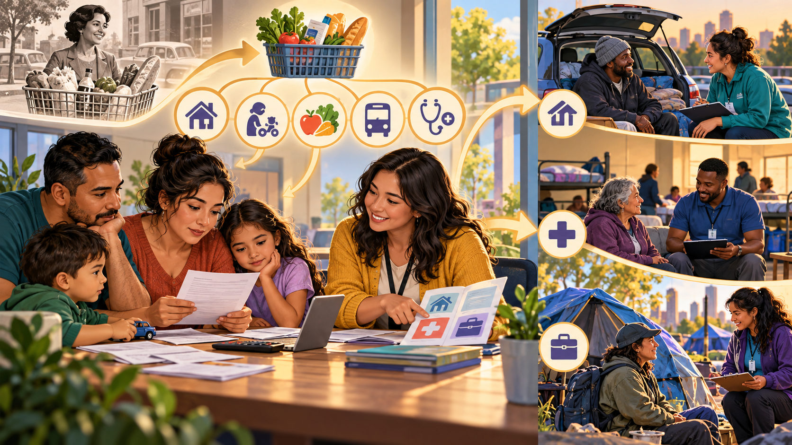
Poverty means lacking sufficient resources to meet socially recognized necessities. Absolute poverty uses a fixed minimum; relative poverty asks whether resources fall far below a society’s ordinary living standard. Material hardship measures concrete difficulty—food insecurity, missed rent, shutoff notices, unmet medical care, or overcrowding—even when income falls just above a formal line.
The U.S. Official Poverty Measure (OPM) compares a family’s pretax cash income with a threshold that varies by family size and composition. Below the threshold, every person in that family is counted as living in poverty. The threshold is statistical; it is not the same as eligibility rules for every assistance program.
The OPM began in the 1960s with the cost of a minimum food diet multiplied by three, then updated for inflation. It does not adjust for geographic housing costs and omits taxes, tax credits, noncash benefits, childcare, work costs, and medical expenses. The Supplemental Poverty Measure adds many of those resources and expenses and adjusts housing costs geographically, giving a different—not automatically higher—estimate.
Feminization of poverty describes the disproportionate poverty risk experienced by women and women-led households. Sociological explanations examine lower lifetime earnings, occupational segregation, unpaid caregiving, interrupted employment, unequal child-support receipt, discrimination, longer average life expectancy, and the costs of raising children with one income. Race, disability, immigration status, sexuality, age, and class intersect with gender, so there is no single women’s experience.
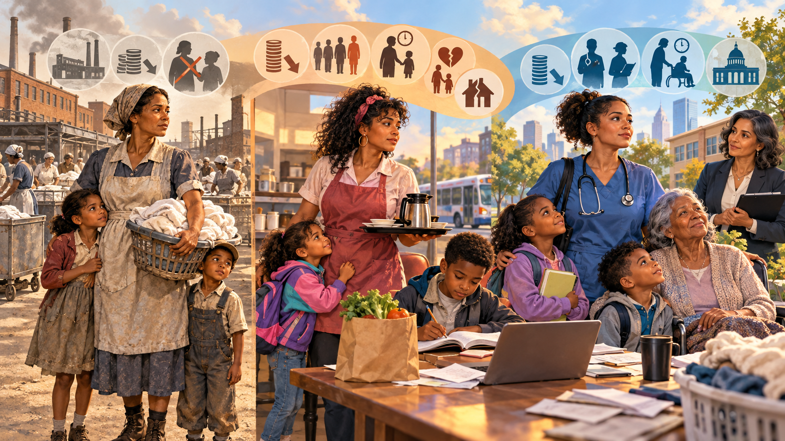
Oscar Lewis used culture of poverty to describe adaptations—such as short time horizons, distrust, or informal survival networks—that may develop where exclusion and insecurity persist across generations. The concept can help identify how people adapt to constrained environments. It becomes misleading when it treats those adaptations as the original cause of poverty, assumes one “poor culture,” or ignores jobs, wages, wealth, schools, housing, health, discrimination, and policy.
What skills, decisions, health conditions, relationships, and immediate crises matter?
What meanings and survival practices are learned in a group or neighborhood?
What institutions distribute wages, housing, education, credit, safety, and political voice?
Test all three levels and the feedback loops among them; do not turn correlation into blame.
A parent works full time, but rent, childcare, and medical deductions leave too little for food.
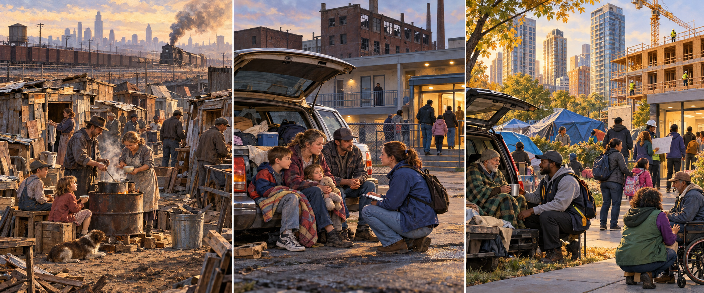
Homelessness includes people in shelters and transitional housing and people staying in places not meant for habitation, such as vehicles, abandoned buildings, or outdoors. It can be brief, episodic, or chronic. People may lose housing through rent increases, eviction, job loss, family conflict, domestic violence, disability, medical crises, disasters, reentry from institutions, or a shortage of affordable homes. Mental illness and substance use can increase vulnerability for some people, but neither explains all homelessness—and homelessness itself can worsen health and safety.
Read the trend carefully: homelessness rose sharply from 2023 to 2024, then declined modestly nationwide in 2025 rather than continuing upward. The 2025 count still found 266,320 people living unsheltered. A Point-in-Time count is a one-night winter snapshot; it does not include everyone who experiences housing loss during a year, and local shelter capacity and counting practices can affect totals.
Choose a tempting explanation. Then replace blame with a testable sociological question.
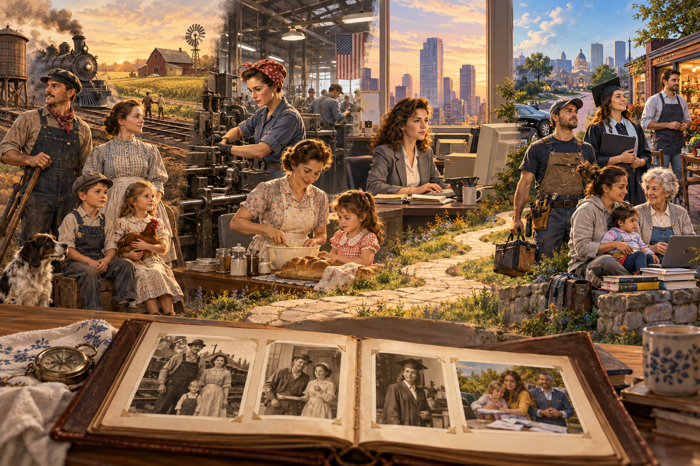
Select or hover over a level. The pyramid is conceptual rather than a precise population graph. It compares typical access to property, power, and prestige; it does not rank human worth.
Property: extensive business ownership, financial assets, valuable real estate, and inherited wealth.
Power: direct access to decision makers, boards, philanthropy, law, media, and investment.
Prestige: elite credentials, addresses, institutions, and networks can appear natural rather than inherited.
Typical security: several buffers against job loss, illness, debt, or market change. These are patterns, not descriptions of every person.
Class boundaries are analytical tools. People disagree about the number and names of positions because income alone cannot locate a person. Ownership, debt, job authority, education, family wealth, neighborhood, security, networks, and the ability to withstand a crisis all matter.
Money received during a period through wages, benefits, rent, interest, or business earnings.
Assets minus debts. Wealth provides security, inheritance, investment, housing access, and protection from emergencies.
The ability to achieve goals despite resistance and to shape rules, institutions, or decisions.
Social honor or respect attached to positions, occupations, credentials, or lifestyles.
Income is a flow; wealth is a stock accumulated through property, savings, business ownership, investment growth, inheritance, and debt. In the Congressional Budget Office’s 2022 estimates, families in the top 10% held 60% of family wealth, while the bottom half held 6%.
Return to the lecture model: each 1.5-inch child’s block represents $500. The arithmetic converts an invisible number into physical distance.
Interpret carefully: this is a scale analogy. Annual salary, income, and accumulated net wealth are different measures, and the graphic does not treat them as interchangeable.
| Position | Income or wealth | Prestige or authority | Why ranks may conflict |
|---|---|---|---|
| New teacher with graduate education | Moderate income; possible student debt | High education and community responsibility | Educational prestige may exceed economic resources. |
| Experienced skilled-trades owner | High income and business assets | Technical authority; prestige varies by audience | Economic position may exceed outsiders’ occupational assumptions. |
| Retired executive after financial loss | Reduced current wealth | Former title, networks, and cultural capital | Prestige and access may outlast income. |
| Influencer with a large audience | Income may be substantial but unstable | Visibility without formal institutional authority | Fame, wealth, expertise, and power are not interchangeable. |
Class boundaries remain debated, but sociologists often discuss upper, upper-middle, middle, working, working poor, and underclass positions. Occupation, education, income, wealth, authority, neighborhood, and networks matter together. Labels should describe structural positions rather than assign moral worth.
Social mobility describes movement within a stratification system, but the comparison must identify both the unit and the time period.
Select a comparison. The formal term, image, definition, and Eleanor-family example will open below.
Who is compared? A child’s adult class position with the family of origin.
Family example: Grace’s education, occupation, and security compared with those of her parents.
Remember: inter means between generations.
Choose a mobility pattern or move the two sliders yourself. First identify who is being compared: generations, one person over time, many workers during structural change, or people exchanging a limited number of positions.
Each block represents $500 of annual income and measures 1.5 inches tall in the lecture example.
84 blocks, about 10.5 feet tall.
The visible stack is scaled so the page remains usable. Extreme wealth quickly becomes too tall to represent at the same scale.
Select conditions. The meter models accumulated opportunity, not a person’s worth or guaranteed outcome.
Opportunity meter: 50%
Intersectionality, developed through Black feminist scholarship and named by Kimberlé Crenshaw, explains how systems such as racism, sexism, class inequality, ageism, heterosexism, and ableism combine. The result is not a simple addition of disadvantages. A social identity may carry advantage in one setting, disadvantage in another, and mixed effects when institutions respond to several identities at once.
Choose a class position and setting. The result shows how resources can buffer barriers without erasing discrimination.
Power is the capacity to shape outcomes, even when others resist. It includes direct commands, but much power works earlier and less visibly: deciding which choices exist, whose expertise counts, which problems receive attention, and which harms become ordinary. Power can be held by governments, corporations, institutions, movements, communities, workers, consumers, and individuals. The amount and kind of power differ sharply.
Power is not one blue block. Select a source to see what it controls, how it appears in Eleanor’s family story, and what can balance it.
Source: ownership, income, wealth, credit, employment, investment, and control of productive property.
Eleanor-family example: a railroad owner can choose the route, wages, and investment while Eleanor’s household must adapt to decisions it did not make.
Possible counterpower: unions, consumer organization, antitrust law, taxation, cooperatives, public investment, and wider ownership.
What it does: wins a visible vote, ruling, appointment, contract, budget, or enforcement choice.
Eleanor-family example: a council approves the railroad route; a later school board votes on funding.
Ask: Who decided, under what authority, and who gained or lost?
What it does: determines which problems, speakers, evidence, and alternatives receive serious attention.
Eleanor-family example: Eleanor’s concern never reaches the newspaper; Grace’s workplace issue receives no hearing.
Ask: What never reached the agenda, and who could exclude it?
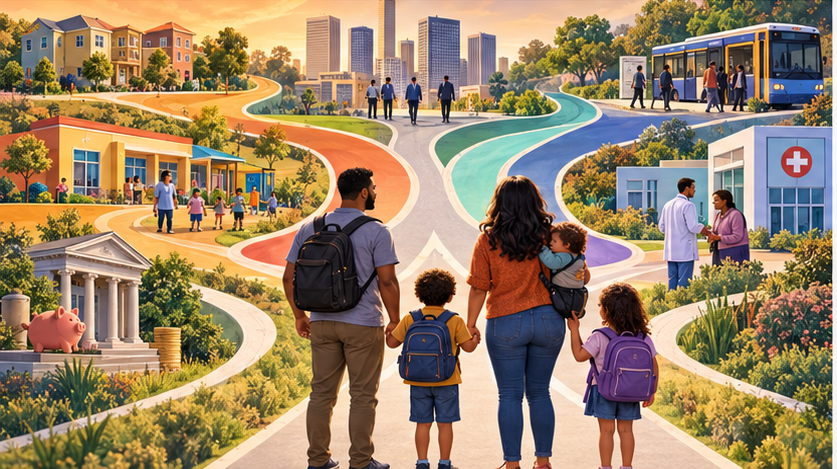
What it does: organizes dependence, markets, institutions, and default pathways.
Eleanor-family example: a company town links wages, housing, and credit; descendants coordinate work, childcare, transport, insurance, and debt.
Ask: Who wrote the rules, owns the bottleneck, or can afford to refuse?
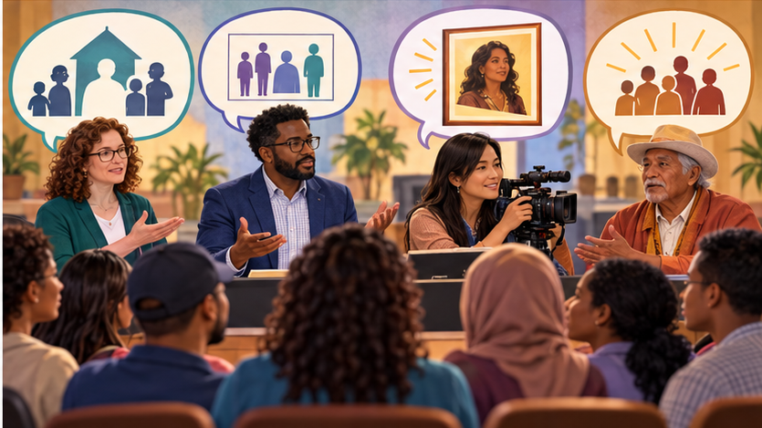
What it does: shapes categories, credentials, reputations, legitimacy, and what feels normal.
Eleanor-family example: a newspaper defines respectable womanhood; modern media frames one group as deserving and another as dangerous.
Ask: Whose language became common sense, and whose account was discredited?
C. Wright Mills used power elite to describe people occupying command positions in major corporate, political, and military institutions. Their power comes from the positions, resources, and networks they can mobilize, not simply from being famous or wealthy. Leaders may move among government, corporate boards, law firms, universities, foundations, media organizations, and defense institutions. This revolving door can concentrate information and access while making institutional interests appear natural or inevitable.
Gilens and Page’s analysis of 1,779 policy outcomes found that economic elites and business interest groups had substantial independent relationships with U.S. policy, while average citizens had little or no independent influence after the other preferences were considered. The study supports elite and biased-pluralist explanations, but it does not show that citizens never matter. Elections, movements, unions, litigation, journalism, and organized constituencies can change the political conditions under which leaders act.
Racism, sexism, classism, and partisan hostility are real forms of inequality; they should not be dismissed as distractions. Yet powerful actors can use existing divisions through scapegoating, selective framing, fear, and divide-and-rule strategies. People may then blame immigrants, racial groups, women, men, poor people, religious groups, or political neighbors for problems more directly connected to wages, housing supply, healthcare pricing, tax policy, corporate decisions, or public investment. Division can benefit an elite when it prevents a broader coalition from examining the institution that distributes the loss.
Eleanor-family connection: In 2008, Grace watches relatives argue about which ordinary group caused job insecurity. She asks them to move backward through the causal chain: Who closed the workplace? Who chose the compensation structure? Who financed the decision? Which laws made it possible? Their disagreement is real, but the sociological imagination redirects attention from the nearest target to the larger arrangement.
White-collar crime uses occupational or organizational access for illegal gain. Corporate fraud, bribery, wage theft, market manipulation, unsafe products, environmental violations, and fraudulent billing can distribute harm across thousands of people, making each loss less visible than a street offense. The Federal Trade Commission reported more than $12.5 billion in consumer fraud losses during 2024. That total includes many kinds of offenders and should not be treated as a measure of elite crime alone; it demonstrates how financially organized harm can reach far beyond one victim.
Power can reduce scrutiny through respected status, expensive legal representation, private settlements, nondisclosure agreements, organizational complexity, political access, or control over records. It cannot guarantee immunity. Whistleblowers, investigators, journalists, auditors, regulators, juries, survivors, and social movements can expose wrongdoing and force institutions to respond.
Organized criminal enterprises seek protection in ways that resemble a business strategy. They may use bribery to purchase cooperation, extortion to obtain something through threats, blackmail to threaten disclosure of damaging information, intimidation to silence witnesses, and money laundering to make illegal proceeds appear legitimate. They may also cultivate ordinary-looking relationships with officials or business leaders. The purpose is to lower risk, gain information, weaken enforcement, or infiltrate a legitimate organization. The federal RICO statute recognizes that an enterprise may operate through a continuing pattern of offenses and was designed in part to combat organized crime’s infiltration of legitimate organizations.
The United Nations Office on Drugs and Crime describes corruption as an enabler of organized crime because corrupt officials can supply protection, information, access, documents, or nonenforcement. Criminal networks may be polycriminal: instead of specializing forever, they adapt their routes, financial systems, technologies, coercive skills, and corrupt contacts to multiple illegal markets. A network involved in drugs may also participate in weapons trafficking, migrant smuggling, human trafficking, fraud, extortion, or money laundering. The overlap varies by place and organization; one illegal market does not automatically produce every other crime.
Drug laws have manifest functions: reducing harmful supply, expressing public standards, punishing predatory conduct, and authorizing intervention. They can also produce latent dysfunctions, or unintended harmful consequences. When strong demand continues under prohibition, legal risk can raise the price of an illegal product. High profits can finance weapons, corruption, territorial control, laundering, and sophisticated transportation networks. Enforcement pressure may fragment markets, displace routes, or reward groups best able to use violence and secrecy.
This pathway is a hypothesis to test, not a claim that drug laws caused human trafficking. Human trafficking has its own causes, including exploitation, vulnerability, labor demand, gender inequality, migration restrictions, conflict, and weak protection. The more defensible connection is crime convergence: an established network can reuse logistics and corrupt access when it enters another market.
Choose one link rather than promising to “end crime.” Reduce illegal profit through carefully designed regulation or treatment; follow money and seize criminal assets with due process; protect witnesses and whistleblowers; strengthen anti-corruption controls; coordinate labor and trafficking enforcement; reduce victims’ vulnerability; or build legitimate economic opportunities. State the intended benefit, the evidence you would measure, and one new latent dysfunction to monitor.
The Jeffrey Epstein and Ghislaine Maxwell cases demonstrate why people may distrust elite networks. Epstein had previously pleaded guilty in Florida to state prostitution-related offenses involving a minor and was later federally charged with sex trafficking of minors; he died before that federal case reached trial. A federal jury convicted Maxwell of facilitating and participating in the sexual abuse of children, and the court sentenced her to twenty years in prison. Their access to wealthy and influential social circles raises legitimate sociological questions about status, gatekeeping, institutional failure, victim credibility, and delayed accountability.
Real secrecy and documented abuse create an information vacuum. Algorithms, partisan entrepreneurs, anonymous accounts, and repeated speculation can fill that vacuum faster than courts or investigations can produce evidence. The result can be a feedback loop: genuine misconduct lowers trust; low trust makes extraordinary claims feel plausible; unsupported claims then make it easier for powerful people to dismiss legitimate questions as conspiracy thinking. Sociology protects both accountability and accuracy by refusing that false choice.
Select each statement and classify what the evidence can establish.
Choose a public problem. Then identify the decision, the institution, the resource, the beneficiary, and a realistic point of counterpower.

Power is relational. Audiences supply attention; workers supply labor; consumers supply revenue; voters supply authority; communities supply legitimacy. In 2024, Blockout 2024 encouraged social-media users to block celebrities, including Kim Kardashian, to reduce attention, engagement, and potential revenue. The movement showed consumer and audience power, although its standards were inconsistent and its long-term effects remained uncertain. Withdrawing attention can pressure a celebrity brand more easily than it can reorganize concentrated ownership, law, or finance.
Boycott, block, unsubscribe, divest, move a purchase, change providers, or refuse participation.
Power source: institutions lose attention, labor, money, data, or legitimacy when people can leave together.
Vote, testify, organize, unionize, petition, investigate, report, publish, or peacefully protest.
Power source: coordinated people become harder to ignore than isolated individuals.
Protect whistleblowers, disclose conflicts, audit decisions, open records, and trace money.
Power source: reliable evidence raises the cost of secrecy, denial, corruption, and selective enforcement.
Change incentives, representation, enforcement, access, and oversight without discarding useful institutions.
Power source: durable rules can make fairness routine rather than dependent on unusually good leaders.
The most durable response is rarely one heroic leader or one party label. Citizens can evaluate candidates and institutions by their plans, evidence, conflicts of interest, transparency, coalition, and measurable results. Democratic remodeling may include campaign-finance rules, stronger ethics and disclosure requirements, antitrust enforcement, labor representation, independent oversight, accessible voting, civic education, and public-interest media. Reform can preserve the constitutional structure while updating the rules for a technologically connected and highly unequal society.
Temple of the Dog brought singers from two bands together to describe a moral conflict: some people possess more than they need while others go hungry. The song turns inequality into a relationship between abundance, deprivation, conscience, and collective responsibility.
How do ownership and labor allow wealth to accumulate while need continues?
How do property, power, and prestige shape who receives security and who receives blame?
Which identities and institutional barriers make hunger or insecurity more likely?
How do cultures decide who “deserves” assistance and what counts as enough?
Eleanor-family caption: Grace hears a new generation sing about an old contradiction. Eleanor saw railroad fortunes beside hunger in the 1890s. The technology and music changed; concentrated resources and moral debates survived.
Listen sociologically: How does the song name emotional labor, domestic labor, gender expectations, unequal reciprocity, and resistance? Which experiences are treated as private relationship problems, and which become public issues when women describe the pattern collectively?
Identity, Inequality, and Mobility in My Ideal Society
Choose two social identities and one class position. Explain how they affect education, work, health, housing, or political power.
Apply at least four bold concepts, including social construction, stratification or class, intersectionality, and institutional discrimination.
Propose one rule that expands access, explain who benefits, and identify an unintended consequence to monitor.
A social category with disproportionate access to institutional power, valued resources, and the authority to define social standards.
A social category facing patterned disadvantage or unequal treatment because of socially marked characteristics; subordinate status need not mean numerical smallness.
A social category occupying a disadvantaged position within a particular relationship of power; often used alongside minority group.
Reducing a person to a body, body part, decoration, or instrument while obscuring agency and full personhood.
Assigning simplified and generalized expectations about traits, capacities, or roles to people based on gender.
The ability to access, analyze, evaluate, and create media while examining its sources, purposes, representations, and power relationships.
Society creates and institutionalizes meanings around categories, making them consequential.
Society ranks groups into durable layers of unequal resources, power, and prestige.
People define themselves—and are defined by others—through group memberships.
A socially constructed classification based on perceived physical traits.
Shared culture, ancestry, history, language, religion, or national origin.
Social identities, roles, behaviors, meanings, and expectations associated with sex categories.
Economic and social position shaped by income, wealth, work, education, and resources.
Unequal distribution of resources, opportunity, treatment, security, and privilege.
Unequal power, resources, expectations, and opportunities organized through gender.
Movement within a class system across one lifetime, generations, or structural change.
Racial prejudice or discrimination connected to practices, institutions, and social power.
Prejudice, discrimination, or unequal treatment organized through gender.
Prejudice or discrimination based on social class or perceived economic position.
Using one culture as the standard for judging another, often treating difference as inferiority.
Stereotypes, prejudice, or discrimination based on age or presumed life stage.
An attitude or judgment formed before adequate evidence.
Praising a behavior as virtue in an in-group while condemning the same behavior as vice in an out-group.
A group experienced as “us” compared with a group categorized as “them.”
Rules or routines that repeatedly produce unequal treatment or outcomes.
Unequal action or treatment based on actual or perceived group membership.
A recognized social position carrying expectations, responsibilities, and meaning.
The capacity to shape decisions, agendas, institutions, meanings, resources, and outcomes.
People in overlapping command positions across major corporate, political, and military institutions.
Movement between leadership roles in government, regulated industries, law, consulting, and other influential institutions.
Power to determine which subjects receive attention and which alternatives remain outside serious debate.
Assigning blame to a convenient group while obscuring more complex causes or more powerful decision makers.
Collective capacity to challenge concentrated power through voice, organization, exit, transparency, and institutional reform.
A criminal network’s participation in several illegal markets or offenses rather than only one specialty.
Abuse of entrusted power for private benefit, including bribery and protection of criminal activity.
An unintended harmful consequence of a social pattern, institution, or policy.
Overlap among criminal markets through shared logistics, finance, technology, coercion, or corrupt access.
Wirth, L. (1941). Morale and minority groups. American Journal of Sociology, 47(3), 415–433. https://doi.org/10.1086/218921
Kilbourne, J. (n.d.). Films. https://jeankilbourne.com/films/
Hodgson, K. (n.d.). Killing us softly 4: Advertising’s image of women—Study guide (J. Earp & J. Young, Eds.). Media Education Foundation. Study guide.
Killing us softly: Advertising’s image of women [Film featuring Jean Kilbourne]. (1979). Instructor-selected YouTube upload. https://www.youtube.com/watch?v=Nx34VpaQxEc
Paloma, P. (2023). Labour [Song]. Nettwerk Music Group.
Colapinto, J. (2000). As nature made him: The boy who was raised as a girl. HarperCollins.
Crenshaw, K. (1989). Demarginalizing the intersection of race and sex. University of Chicago Legal Forum, 1989(1), 139–167.
Davis, K., & Moore, W. E. (1945). Some principles of stratification. American Sociological Review, 10(2), 242–249.
Diamond, M., & Sigmundson, H. K. (1997). Sex reassignment at birth: Long-term review and clinical implications. Archives of Pediatrics & Adolescent Medicine, 151(3), 298–304. https://doi.org/10.1001/archpedi.1997.02170400084015
Embryo Project Encyclopedia. (2017). David Reimer and John Money gender reassignment controversy: The John/Joan case. Arizona State University. https://embryo.asu.edu/pages/david-reimer-and-john-money-gender-reassignment-controversy-johnjoan-case
Fausto-Sterling, A. (1993). The five sexes: Why male and female are not enough. The Sciences, 33(2), 20–24. https://doi.org/10.1002/j.2326-1951.1993.tb03081.x
Federal Trade Commission. (2025, March 10). New FTC data show a big jump in reported losses to fraud to $12.5 billion in 2024. https://www.ftc.gov/news-events/news/press-releases/2025/03/new-ftc-data-show-big-jump-reported-losses-fraud-125-billion-2024
Gaines, D. (1998). Teenage wasteland: Suburbia’s dead end kids. University of Chicago Press. (Original work published 1990)
Gilens, M., & Page, B. I. (2014). Testing theories of American politics: Elites, interest groups, and average citizens. Perspectives on Politics, 12(3), 564–581. https://doi.org/10.1017/S1537592714001595
Hodgson, C. (2025). M3 lecture notes: Chapters 4, 8, 12, 13, and 15 [Course slides].
Karlsen, C. F. (1998). The devil in the shape of a woman: Witchcraft in colonial New England. W. W. Norton. (Original work published 1987)
Library of Congress. (n.d.). Seneca Falls and building a movement, 1776–1890. https://www.loc.gov/exhibitions/women-fight-for-the-vote/about-this-exhibition/seneca-falls-and-building-a-movement-1776-1890/
National Women’s History Museum. (2020). Feminism: The second wave. https://www.womenshistory.org/exhibits/feminism-second-wave
Smithsonian National Museum of African American History and Culture. (2019). The revolutionary practice of Black feminisms. https://nmaahc.si.edu/explore/stories/revolutionary-practice-black-feminisms
Hodgson, C. (2026). M4 lecture notes: Chapters 10, 7, 9, 14, and 19 [Course slides].
Lewis, O. (1966). The culture of poverty. Scientific American, 215(4), 19–25.
OpenStax. (2021). Introduction to sociology 3e. Rice University. https://openstax.org/details/books/introduction-sociology-3e
Mills, C. W. (1956). The power elite. Oxford University Press.
Merton, R. K. (1949). Discrimination and the American creed. In R. M. MacIver (Ed.), Discrimination and national welfare (pp. 99–126). Institute for Religious Studies.
Nkrumah, K. (1965). Neo-colonialism: The last stage of imperialism. Thomas Nelson & Sons.
U.S. Department of Justice. (2024, December 30). Justice Department’s 10th distribution brings total provided to Madoff victims to over $4.3 billion. https://www.justice.gov/archives/opa/pr/justice-departments-10th-distribution-brings-total-provided-over-43b-nearly-full-recovery
U.S. Senate Historical Office. (2024, July 1). 100 years since Teapot Dome. https://www.senate.gov/artandhistory/senate-stories/one-hundred-years-since-teapot-dome.htm
988 Suicide & Crisis Lifeline. (n.d.). Get help. https://988lifeline.org/get-help/
The Associated Press. (2024, May 15). What is the celebrity “blockout” over the war in Gaza?
U.S. Attorney’s Office, Southern District of New York. (2019, July 8). Jeffrey Epstein charged in Manhattan federal court with sex trafficking of minors. U.S. Department of Justice. https://www.justice.gov/usao-sdny/pr/jeffrey-epstein-charged-manhattan-federal-court-sex-trafficking-minors
U.S. Attorney’s Office, Southern District of New York. (2022, June 28). Ghislaine Maxwell sentenced to 20 years in prison for conspiring with Jeffrey Epstein to sexually abuse minors. U.S. Department of Justice. https://www.justice.gov/usao-sdny/pr/ghislaine-maxwell-sentenced-20-years-prison-conspiring-jeffrey-epstein-sexually-abuse
Rawls, J. (1999). A theory of justice (Rev. ed.). Harvard University Press. (Original work published 1971)
Sherif, M., Harvey, O. J., White, B. J., Hood, W. R., & Sherif, C. W. (1961). Intergroup conflict and cooperation: The Robbers Cave experiment. University Book Exchange.
Temple of the Dog. (1991). Hunger strike [Song]. On Temple of the Dog. A&M Records.
Tumin, M. M. (1953). Some principles of stratification: A critical analysis. American Sociological Review, 18(4), 387–394.
Wallerstein, I. (2004). World-systems analysis: An introduction. Duke University Press.
United Nations Office on Drugs and Crime. (2024, November). Explainer: How corruption facilitates organized crime. https://www.unodc.org/unodc/frontpage/2024/November/explainer_-how-corruption-facilitates-organized-crime.html
U.S. Census Bureau. (2025, June 13). The history of the official poverty measure. https://www.census.gov/topics/income-poverty/poverty/about/history-of-the-poverty-measure.html
U.S. Census Bureau. (2025, September 2). Comparing poverty measures: Development of the Supplemental Poverty Measure and differences with the Official Poverty Measure. https://www.census.gov/newsroom/blogs/random-samplings/2025/09/difference-supplemental-and-official-poverty-measures.html
U.S. Census Bureau. (2024, April 8). Updates to OMB’s race/ethnicity standards. https://www.census.gov/newsroom/blogs/random-samplings/2024/04/updates-race-ethnicity-standards.html
U.S. Department of Housing and Urban Development. (2024). The 2024 Annual Homelessness Assessment Report to Congress: Part 1—Point-in-time estimates of homelessness. https://www.huduser.gov/portal/sites/default/files/pdf/2024-AHAR-Part-1.pdf
U.S. Department of Housing and Urban Development. (2026). The 2025 Annual Homelessness Assessment Report to Congress: Part 1—Point-in-time estimates of homelessness. https://www.huduser.gov/portal/sites/default/files/pdf/2025-AHAR-Part-1.pdf
U.S. Department of Justice. (2018). Organized crime and racketeering. Justice Manual. https://www.justice.gov/jm/jm-9-110000-organized-crime-and-racketeering
| College pathway | Section benefit | At work |
|---|---|---|
| 🩺 Health and human services | Recognize how identity, class, discrimination, and accumulated disadvantage shape health and access. | Question assumptions, reduce barriers, communicate respectfully, and connect care to social conditions. |
| 🧠 Counseling and behavioral health | Separate personal distress from stigma, exclusion, role conflict, and unequal opportunity. | Use the client’s social location without reducing the person to demographic categories. |
| ⚖️ Public safety, law, and government | Distinguish individual bias from institutional rules that produce unequal treatment. | Review discretion, evidence, access, and outcomes across groups while protecting equal treatment. |
| 📚 Education and early childhood | Understand stereotypes, tracking, class resources, identity development, and intersectionality. | Set high expectations, provide access, examine discipline patterns, and avoid treating one background as the norm. |
| 💼 Business, management, and entrepreneurship | See how hiring networks, occupational segregation, caregiving, credentials, and wealth affect opportunity. | Design fair recruitment, promotion, pay, scheduling, and accommodation practices. |
| 🎨 Arts, communication, and media | Analyze representation, stereotypes, gatekeeping, status symbols, and class narratives. | Create accurate portrayals and examine whose perspective receives authority or visibility. |
| 🔧 Skilled trades | Recognize how licensing, networks, class background, gender expectations, and access shape careers. | Mentor fairly, serve diverse customers, challenge stereotypes, and build inclusive crews. |
| ✂️ Personal-care services | Understand beauty norms, ageism, gender expression, class signals, and culturally shaped identities. | Respect self-definition, avoid assumptions, maintain consent, and make services welcoming. |
| 🔬 STEM | Connect technical decisions with data bias, access, disability, surveillance, and unequal outcomes. | Test systems across populations, document limitations, protect privacy, and design for inclusion. |
Section Six moves Eleanor’s descendants into 2026 to examine collective behavior, urban legends, moral panics, social movements, population, urbanization, environment, globalization, technology, and social change.
Read carefully: payroll taxes are pooled; one named worker does not finance one named beneficiary. Financing also depends on wages, employment, taxable earnings, fertility, immigration, longevity, benefits, tax rates, and reserves. In 2025 Social Security paid benefits to about 70 million people, including retired workers and dependents, disabled workers and dependents, and survivors.